Jet HR
Il redesign dell’area dipendente di Jet HR, su desktop e mobile, e una busta paga che si capisce anche senza conoscere le sigle.
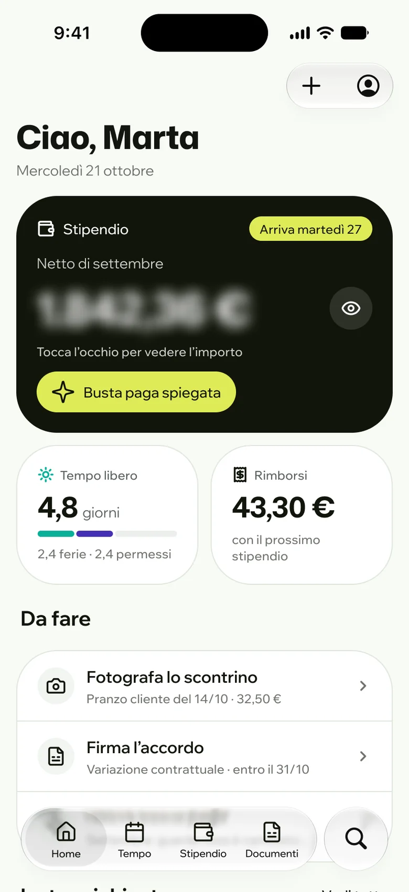
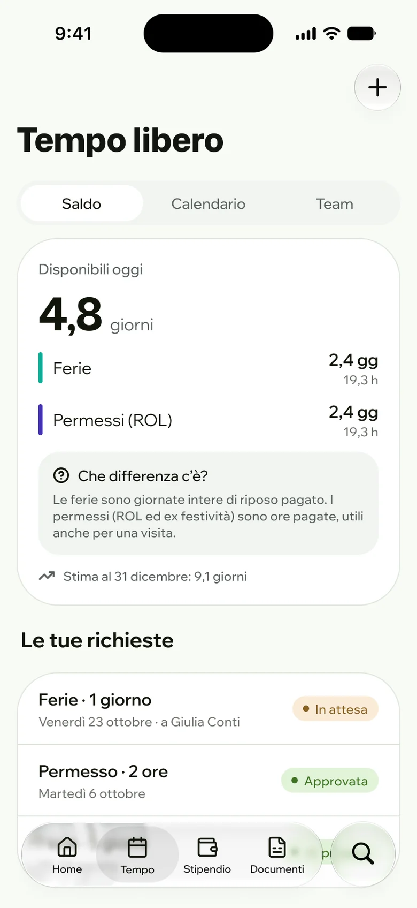
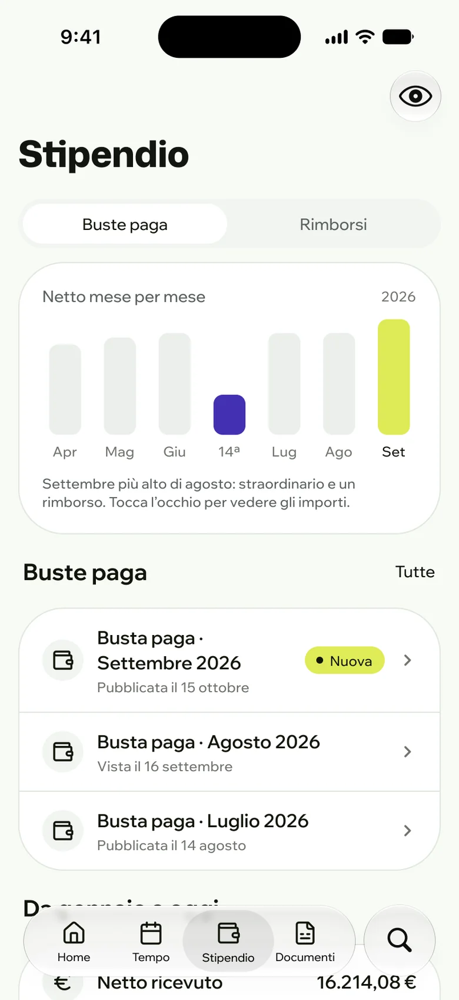
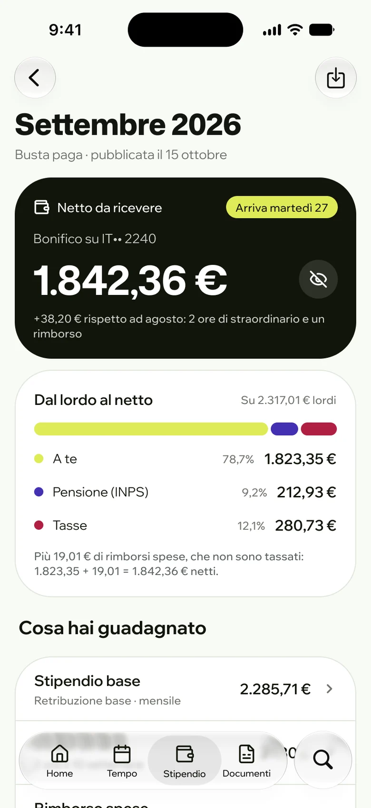
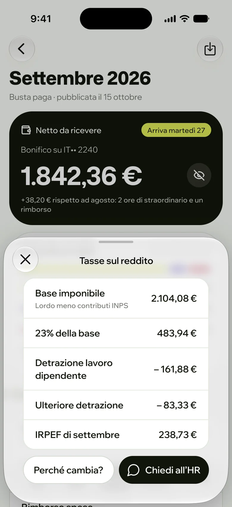
In breve
Problema
L’app è il desktop rimpicciolito e la busta paga parla la lingua del consulente del lavoro.
Il mio ruolo
Progetto individuale: discovery, ricerca normativa, UX, UI, design system e piano di test.
Cosa ho fatto
Web app e app mobile con gli stessi componenti, un nuovo cedolino e una busta paga spiegata voce per voce.
Risultato
Un’area dipendente che risponde subito alle domande più frequenti, pronta per i test con utenti.
Il progetto
Jet HR gestisce le paghe di molte piccole aziende italiane. L’area dei dipendenti è dove si guarda la busta paga, si chiedono le ferie, si caricano gli scontrini e si scaricano i documenti. Oggi l’app mobile è la versione desktop rimpicciolita, e la busta paga parla la lingua del consulente del lavoro. Ho riprogettato entrambe partendo da una domanda: cosa vuole sapere davvero un dipendente quando apre l’app?
Il progetto in numeri
20
schermate tra web app e app mobile
1
sola libreria di componenti per desktop e mobile
1
busta paga riprogettata, chiara e completa
4
domande dei dipendenti al centro dell’esperienza
Processo
Dalle domande dei dipendenti ai test, con un solo design system.
Discovery
Problema riformulato, domande reali dei dipendenti e vincoli di legge prima di disegnare.
Design system
Il brand del sito esteso in token, stili di testo e componenti con variante desktop e mobile.
Desktop e mobile
Web app e app con gli stessi componenti, per un’esperienza coerente ovunque.
Busta paga e verifica
Cedolino riprogettato, busta paga spiegata voce per voce, piano di test e verifica di accessibilità.
Le domande giuste
Chi apre l’area dipendente ha quasi sempre una domanda precisa. Ho messo in ordine quelle più frequenti e ho costruito la home e la busta paga per rispondere prima a quelle.
Quanto ricevo, e quando?
Netto e data di accredito sono la prima cosa in home. Il netto è nascosto finché non tocchi l’occhio.
Perché è diverso dal mese scorso?
Ogni busta paga dice cosa è cambiato rispetto al mese prima, con le voci che spiegano la differenza.
Quanti giorni di ferie ho?
Ferie e permessi in giorni, con le ore come dettaglio e la stima al 31 dicembre.
Dove finiscono i soldi tra lordo e netto?
Una barra divisa in tre: quello che resta a te, i contributi per la pensione e le tasse.
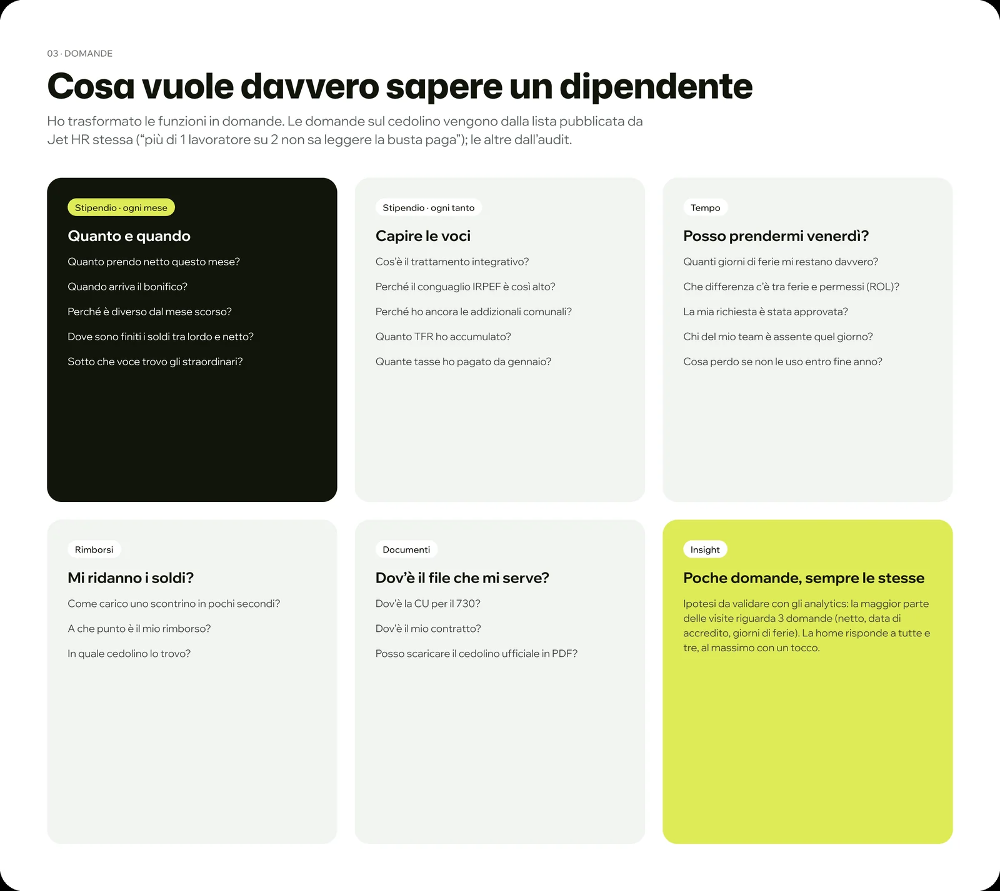
Cosa si può cambiare
Prima di ridisegnare la busta paga ho verificato cosa è obbligatorio e cosa no. La forma è libera, il contenuto no.
Forma libera
La busta paga non ha un modello fisso: si può riorganizzare, purché contenga tutti i dati.
Stessi dati, nuove parole
Importi e codici restano quelli ufficiali: cambia solo come si leggono.
Privacy prima di tutto
Dati personali protetti per default: lo stipendio resta nascosto finché non lo vuoi vedere.
Trasparenza
Dal profilo si possono chiedere le informazioni sulla retribuzione del proprio ruolo.
La web app
In home ci sono lo stipendio con la data di accredito, il tempo libero in giorni, le cose da fare e la settimana del team. Le richieste si fanno da un pannello laterale, senza perdere il calendario.
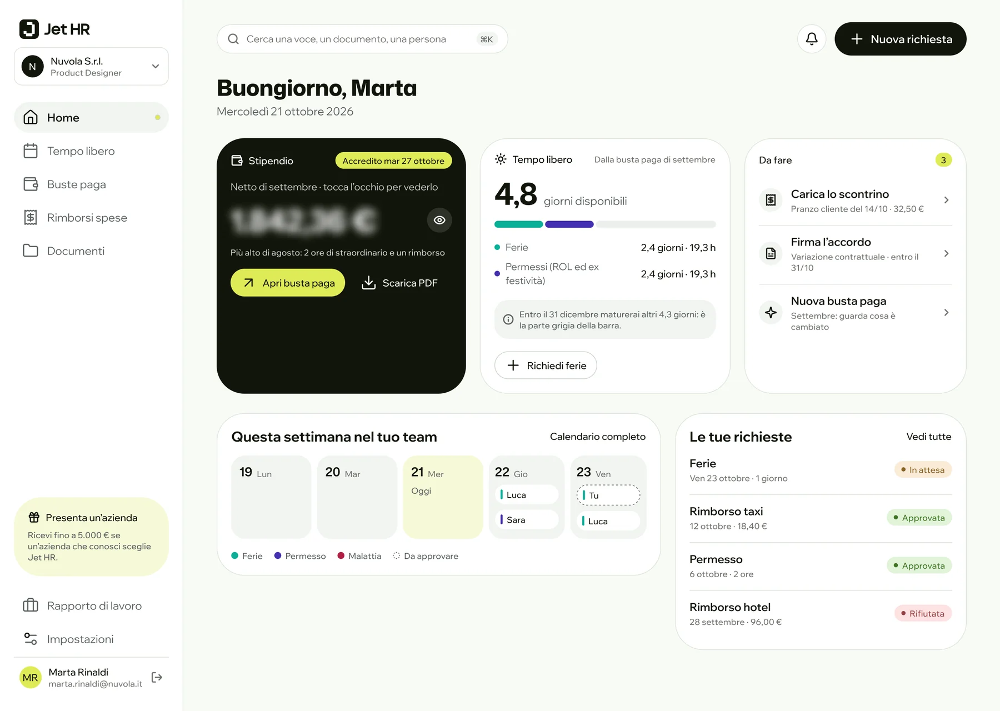
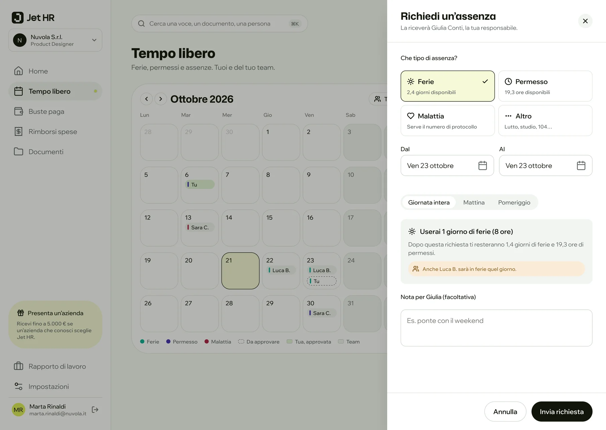
L’app mobile
Gli elementi di sistema restano quelli nativi, così l’app è subito familiare. Dentro, gli stessi componenti della web app: chi passa dal computer al telefono ritrova le stesse righe, le stesse card e gli stessi pulsanti.
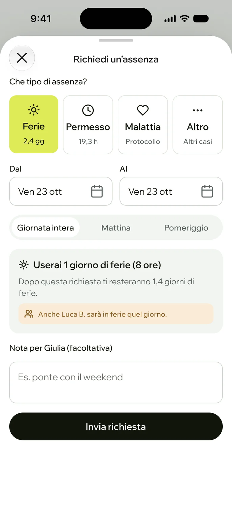
La busta paga
Il PDF ufficiale resta il documento legale, ma riorganizzato per domande. Nell’app, la vista spiegata mette ogni voce in parole semplici, con il nome ufficiale e il codice accanto. Gli importi sono gli stessi, cambiano le parole.
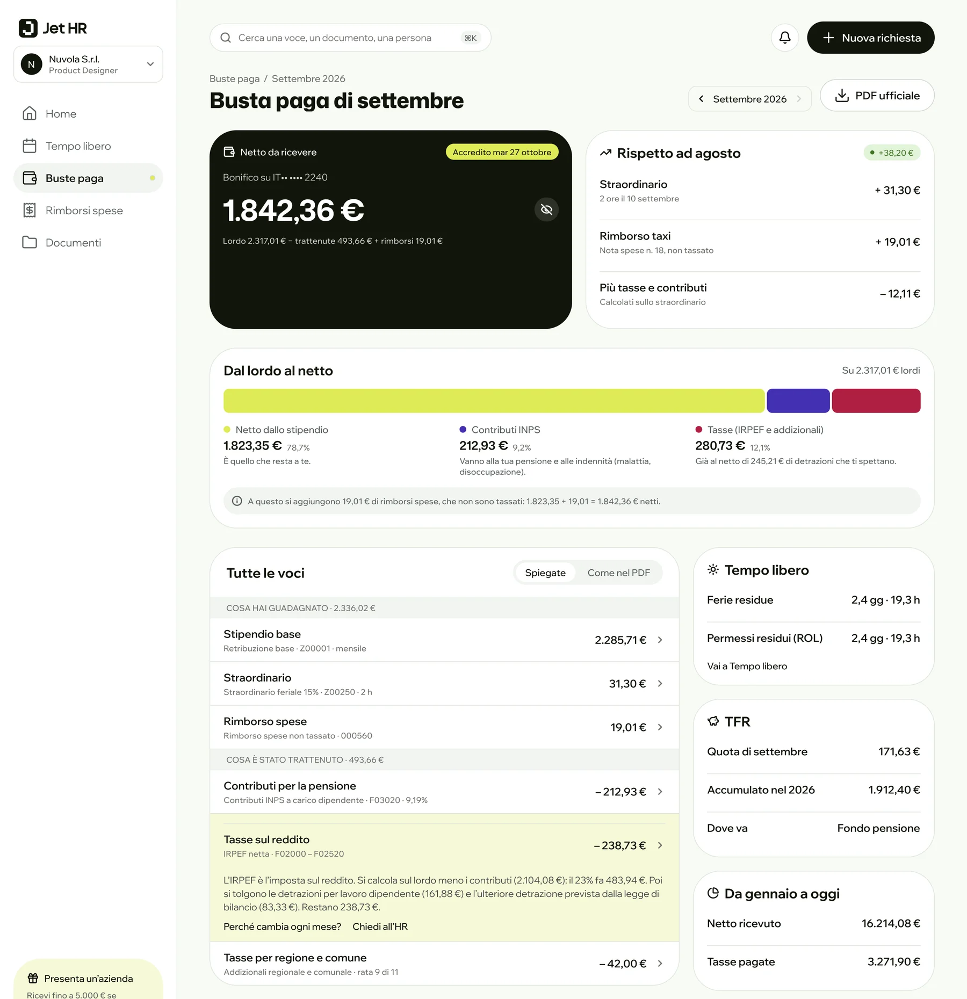
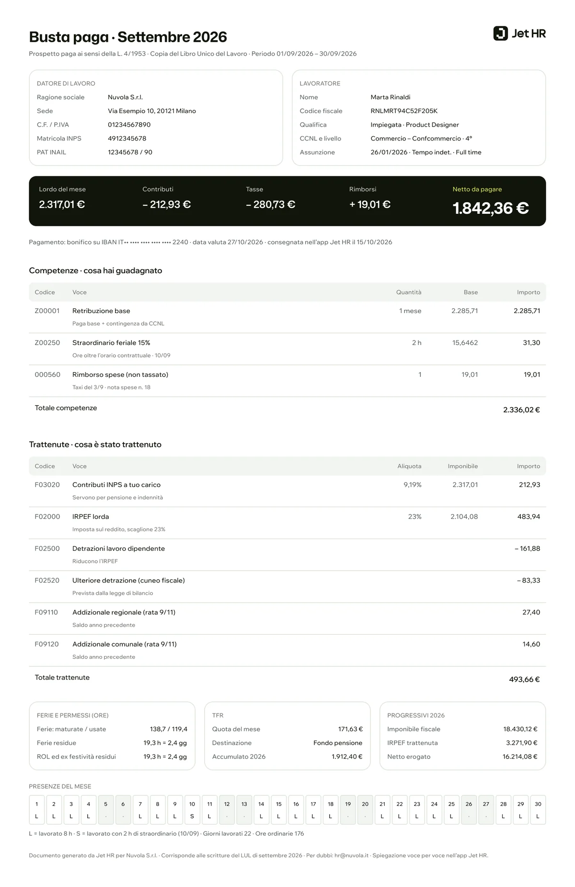
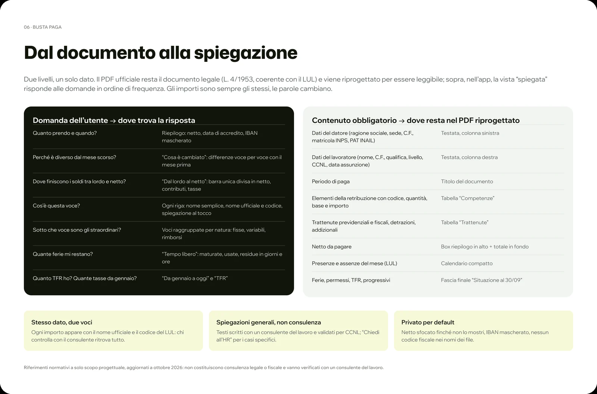
Design system
Colori e caratteri vengono dal sito di Jet HR. Li ho trasformati in variabili e stili, poi ho aggiunto i componenti che servivano all’app, ognuno con una variante desktop e una mobile.
Colore
- #DFEB57LimeAccento del brand e stati in evidenza
- #11150ANeroTesti, pulsanti principali e card dello stipendio
- #F8FAF5PaginaSfondo delle schermate
- #FFFFFFCardSuperfici e liste
- #0BB098FerieCategoria nel calendario
- #4330B2PermessoCategoria e contributi
- #B01F42MalattiaCategoria e tasse
Tipografia
Aa
Mona Sans
Titoli e importi
Aa
Wix Madefor Display
Testi ed etichette
Stessi componenti su desktop e mobile: chi passa dal computer al telefono ritrova le stesse righe, card e pulsanti.
Forme coerenti a ogni livello, con pulsanti a capsula e card morbide, fedeli al brand.
La stessa tipografia ovunque, dai titoli agli importi, anche negli elementi di sistema.
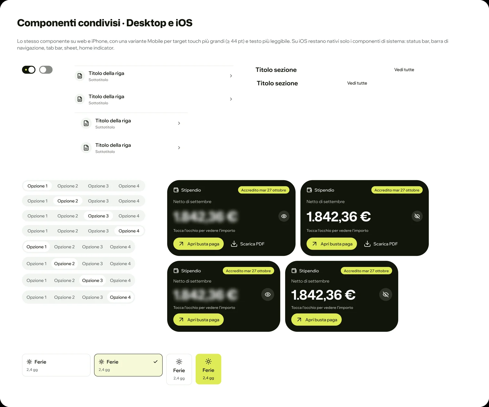
Accessibilità e test
Leggibile
Contrasti verificati sui colori del brand, perché importi e date si leggano al primo colpo.
Facile da usare
Aree di tocco ampie e azioni sempre nello stesso punto, su desktop e mobile.
Chiara per tutti
Parole semplici al posto delle sigle, per chi non conosce il linguaggio delle paghe.
Cosa ho imparato
Studiare i vincoli di legge prima di disegnare ha cambiato il progetto: la forma della busta paga è libera, il contenuto no. Questo mi ha detto esattamente quanto potevo osare.
Rifarei la scelta di usare gli stessi componenti su desktop e mobile: l’esperienza è coerente e il design system resta piccolo.
La prossima volta porterei prima le domande dei dipendenti davanti a persone vere, invece di partire solo da fonti pubbliche.
Prossimi passi
Usability test con dipendenti veri, verifica dei testi con un consulente del lavoro, modalità scura e Dynamic Type, passaggio agli sviluppatori.
Prossimo progetto: idealista
Brand identity e app mobile · progetto personale
Nuova identità e app per trovare casa con prezzi chiari e annunci verificati: 39 schermate, 54 icone e un solo pixel quadrato.